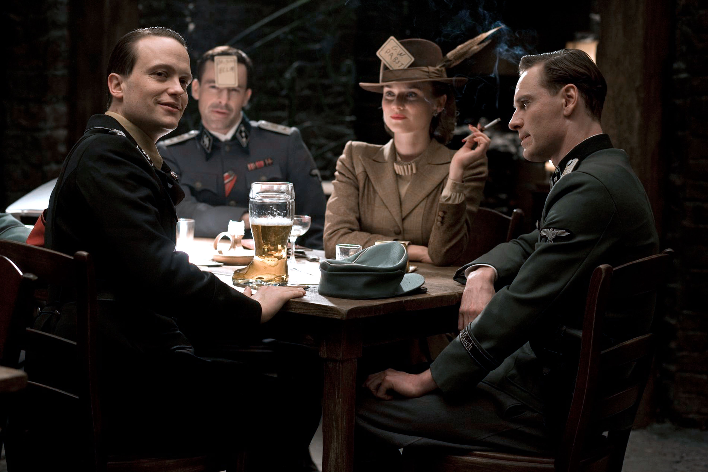
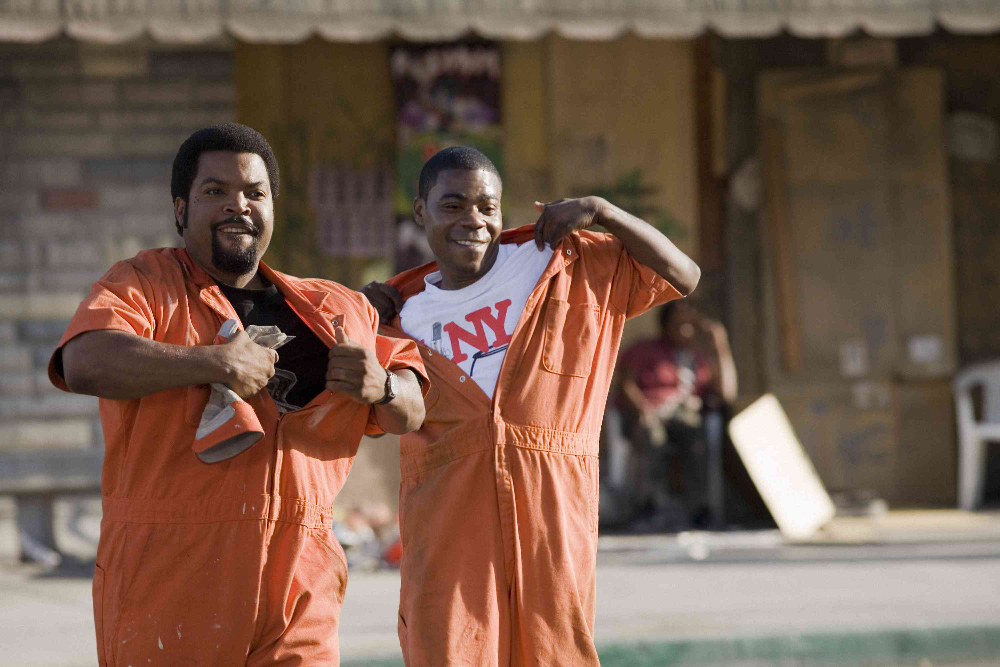

Get a feeling about a scene based on the emotion of the actors and actresses!

Movie Biometrics can process all of the faces in a scene, trailer, or movie using Microsoft's Project Oxford.

Search our database to find the right movie for the emotion you're looking for!